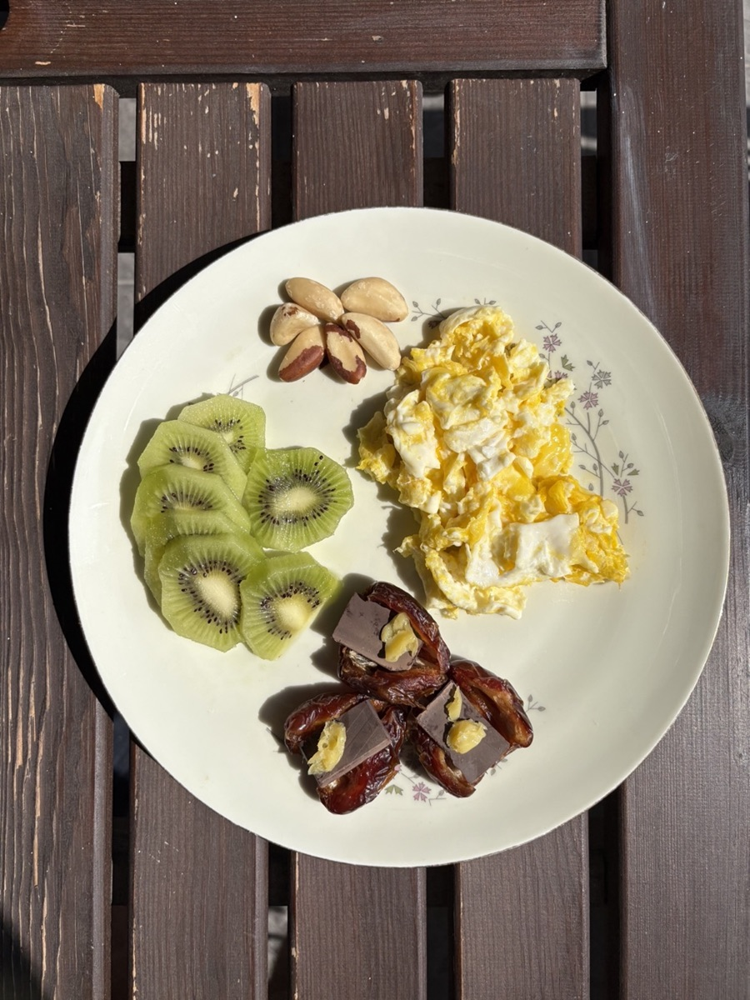
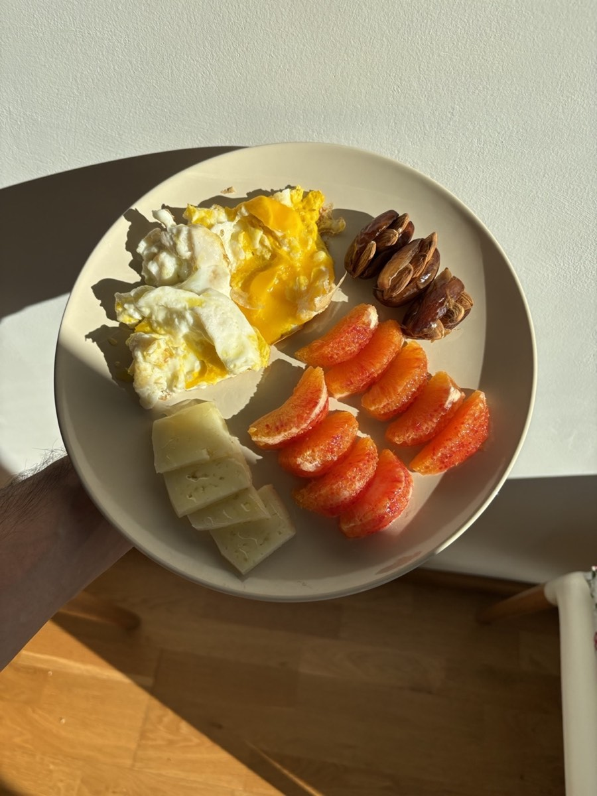
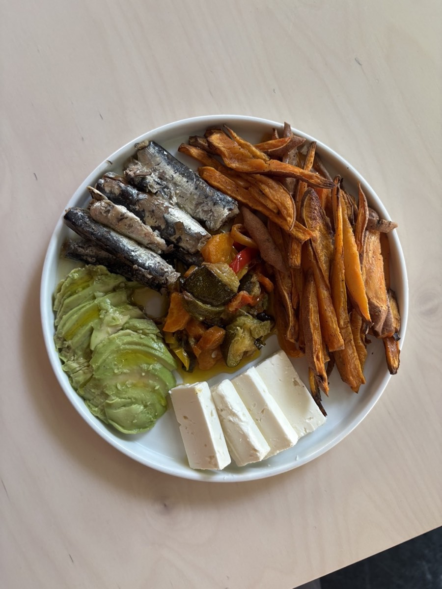
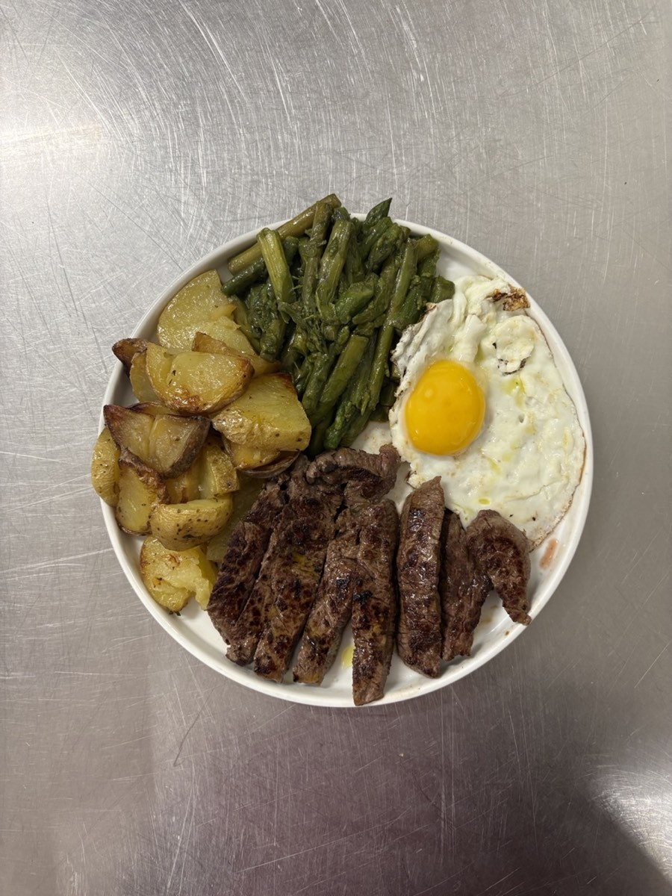
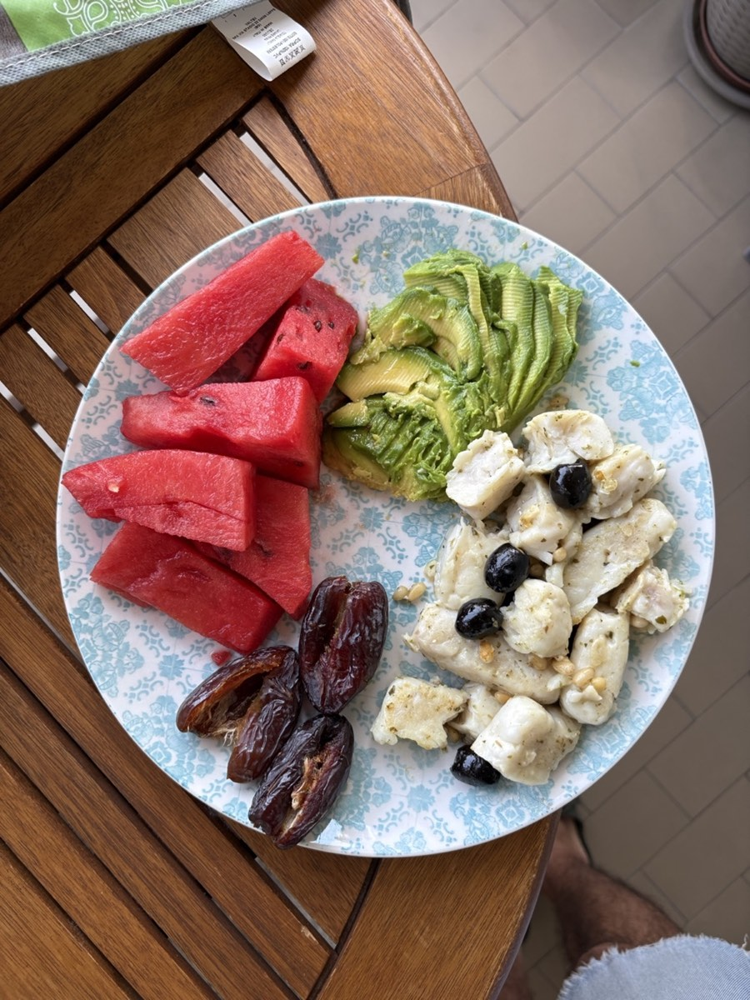
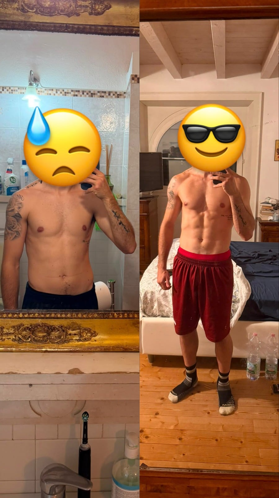
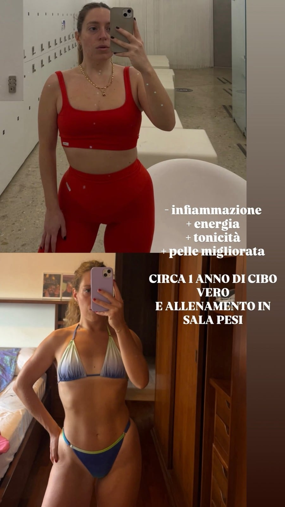
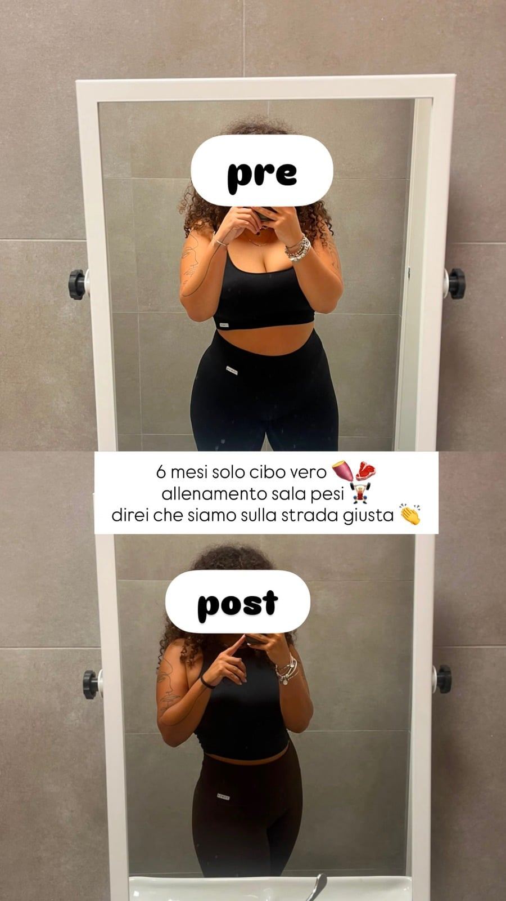

Togli l'ultraprocessato
Parti da ingredienti semplici e riconoscibili.
Ciao, sono Nicolas
Mangiare secondo natura non è una dieta. È tornare a ciò che il tuo corpo riconosce: cibo vero e stagionale, a sazietà, senza contare calorie.
Inizia su WhatsAppDalla cucina di Nicolas
Questi sono alcuni dei piatti che preparo: semplici, colorati e pieni di gusto.





Il metodo
Parti da ingredienti semplici e riconoscibili.
Scegli cibi di stagione e mangia a sazietà.
Trova un ritmo che puoi portare nella tua vita.
Nel mio approccio non conto le calorie: parto da ingredienti semplici e ascolto la sazietà.
È un modo di scegliere e preparare cibo vero, con abitudini che possano adattarsi alla tua vita.
Sì, tutto a distanza, ovunque tu sia.
No, non sono un nutrizionista abilitato. Studio da tempo l'alimentazione e condivido ciò che ho imparato e provato su di me. Non faccio diagnosi né prescrivo diete: per esigenze cliniche, rivolgiti a un professionista sanitario abilitato.
Chi sono
Ho approfondito la nutrizione funzionale e ho provato questo approccio prima su di me. Nel mio percorso ho notato più energia e cambiamenti nell’umore, nella pelle e nella composizione corporea.
+ energiapelle miglioratacorpo più forte
Risultati



Risultati individuali, ottenuti con cibo vero e allenamento con i pesi.
su WhatsApp
dei tuoi obiettivi
dal primo pasto